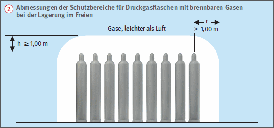
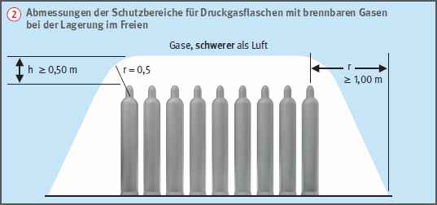

- engen Höfen,
- Durchgängen und Durchfahrten,
- in der Nähe von Gruben, Kanälen, Abflüssen und tiefer liegenden Räumen.
 .
. keine Zündquellen, Gruben, Kanäle, Bodenabläufe, Kellerniedergänge befinden.
keine Zündquellen, Gruben, Kanäle, Bodenabläufe, Kellerniedergänge befinden.
Lagerung von Druckgasbehältern im Freien |
 . keine Zündquellen, Gruben, Kanäle, Bodenabläufe, Kellerniedergänge befinden.
. keine Zündquellen, Gruben, Kanäle, Bodenabläufe, Kellerniedergänge befinden.

Betriebssicherheitsverordnung
Gefahrstoffverordnung
ASR A1.3 Sicherheits- und Gesundheitsschutzkennzeichnung
TRBS 2152-3 Gefährliche explosionsfähige Atmosphäre
TRBS 3145 / TRGS 745 Ortsbewegliche Druckgasbehälter – Füllen, Bereithalten, innerbetriebliche Beförderung, Entleeren
TRGS 400 Gefährdungsbeurteilung für Tätigkeiten mit Gefahrstoffen
TRGS 407 Tätigkeiten mit Gasen – Gefährdungsbeurteilung
TRGS 510 Lagerung von Gefahrstoffen in ortsbeweglichen Behältern
TRGS 720/TRBS 2152 Gefährliche explosionsfähige Atmosphäre – Allgemeines
DVS* Merkblatt 0212 Umgang mit Druckgasflaschen
*DVS = Deutscher Verband für Schweißen undverwandte Verfahren e. V.
07/2021